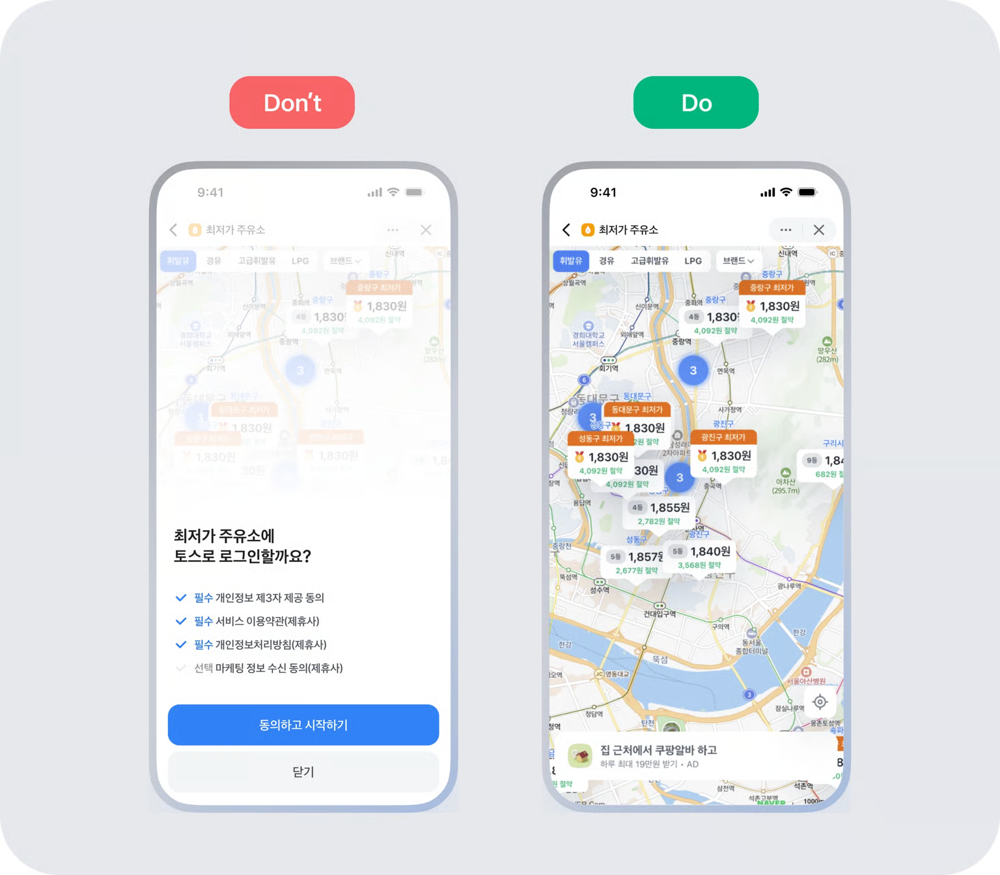
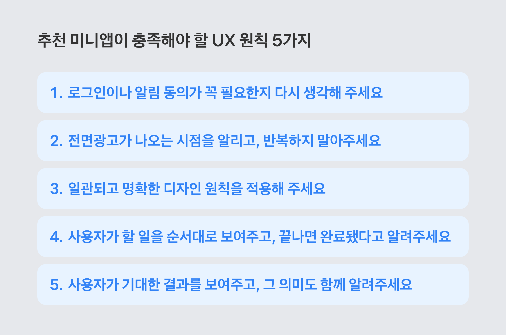
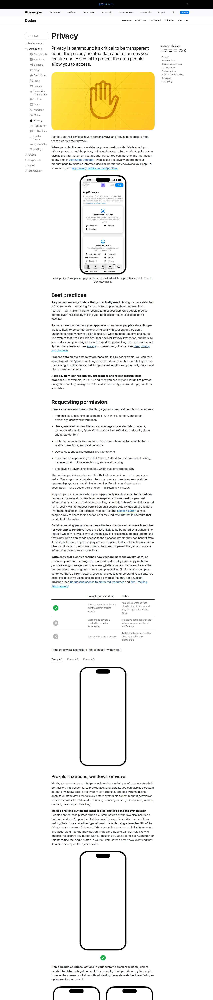
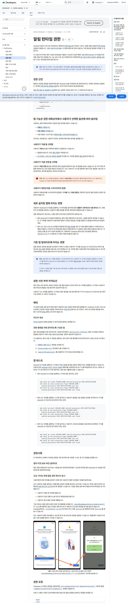
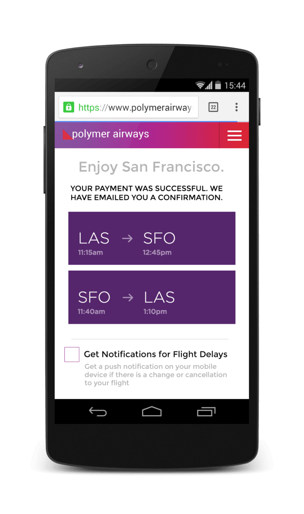
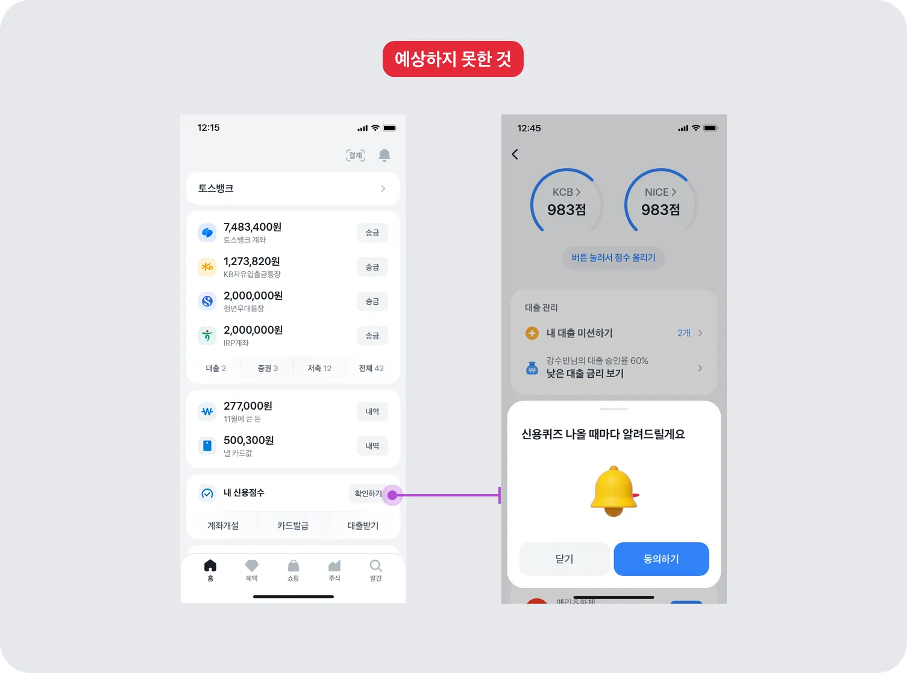

요소마다 실물 근거(레퍼런스 팩) · 지금 모습 · 후보 3개를 같은 폭·같은 축척으로 나란히 둔다. 후보는 프로토타입 그 자체를 띄운 것이라 칩을 바꾸면 흐름 전체가 그 안으로 바뀐다. 휴대폰 폭에서는 위의 A·B·C 버튼으로 하나씩 본다. 이 페이지는 검수용이고 제품 화면이 아니다.
통제변인(안마다 같음): 화면 1장, 버튼 2개(시작하기 → 목표 쓰기 / 이미 계정이 있어요 → 로그인), 로그인·권한 요청 0, 결제·금액 0, 더미 목표 "토익 900". 안마다 다른 것: 주인공 요소(워드맵 · 카드와 도착 알림 · 선언 문장).


좋은 점 보상 모습을 첫눈에 본다. 차용: toss-blog-login-notice-02
나쁜 점 응원 0 인 사람에게는 남의 결과처럼 보일 수 있다
좋은 점 "내 카드" 로 주인 의식. 차용: 운영 MyGoalListCard
나쁜 점 화면 요소가 많아 첫 화면 위계가 약하다
좋은 점 무엇을 하는 앱인지 글로 분명하다. 차용: 3.1.1 how 4단계
나쁜 점 글이 많고 기대감이 약하다
통제변인: 시점(첫 목표 저장 직후 홈), 제목·설명 문구, 잠금화면 알림 미리보기(금액 0), 시스템 창으로 가는 버튼 "다음", 그 뒤 시스템 창. 안마다 다른 것: 배치(시트 · 전체 화면 · 홈 안 카드)와 "나중에" 를 버튼으로 두는가. Apple HIG 는 사전 안내에 버튼 하나와 나가기 버튼 금지를 요구한다(A 는 그 지침과 부딪힌다).




좋은 점 PRD 문구 그대로, 나중에가 분명
나쁜 점 HIG 사전 안내 지침(나가기 버튼 금지)과 부딪혀 심사 위험
좋은 점 HIG 문장 그대로
나쁜 점 나갈 길이 시스템 창뿐이라 강요로 느껴진다
좋은 점 화면을 덮지 않아 지나치면 그게 나중에, 버튼은 하나. 차용: web.dev 결제 완료 안 체크
나쁜 점 덜 눈에 띄어 허용률이 A 보다 낮을 수 있다(실측 전)